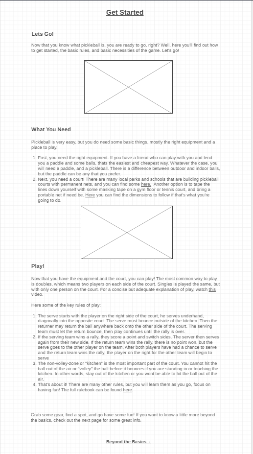

Purpose
My website idea is to create a news/info page dedicated to pickleball. There, avid pickleball fans would gather to get all of the web info they need. This website would have a home page with a summary of what the sport is, how to get involved, being concise and informative. You would also find useful info about pickleball products, and links to other useful sites, like for detailed tournament schedules, rankings, or equipment stores. This will be a one stop shop for all things pickleball, something that currently can’t be achieved without searching out and visiting many different websites. Why are pickleball sites not very engaging? Because their content is mostly singular. What if a website had everything you might think to search for? That would be the place to go, wouldn’t it? That’s why I think an all in one pickleball news, information, and directory (if you will) site is a great idea to generate a lot of traffic.
Audience
The audience of this page will be of all ages. Grandmas and Grandpas looking to stay active, college students learning about a new activity that they can easily to with their friends, and everybody in between. These people need a quick, easy, and SIMPLE guide to the sport, before they lose interest or think that it is too complicated to learn and enjoy. Any mom, dad, parent, grandparent or child will be able to understand what pickleball is and be excited to start playing.
Home page
The site to get started fast in pickleball! This site will help you get started the right way! We will teach you what the sport is, and why you should play it! What is pickleball, why to play, benefits of the game for health physical and mental. And pros to the game, incentive to play! Need to know info, where the sport Is going and when describing the site and what it can help you with.
Get Started Page
Where to get started, equipment, pros and cons of certain paddles, Balls, the info for differences and make the decisions easy. Indoor and outdoor Is important to understand. when and where to buy, who to play with, link to pickleball courtfinding sites, help to choose a net if they want, talk about pros and cons of starting equpment.
Beyond the basics
Strategies, techniques, terminology, what does dink mean? What does drive? Third shot drop or drive and why it’s important to hit unattackable balls. How to count serve, position yourself, what the point of the game is, get to The kitchen and stay out. Links to sites with more information Basic how to. Basic rules of the game Link to official rules. Link to shopping sites